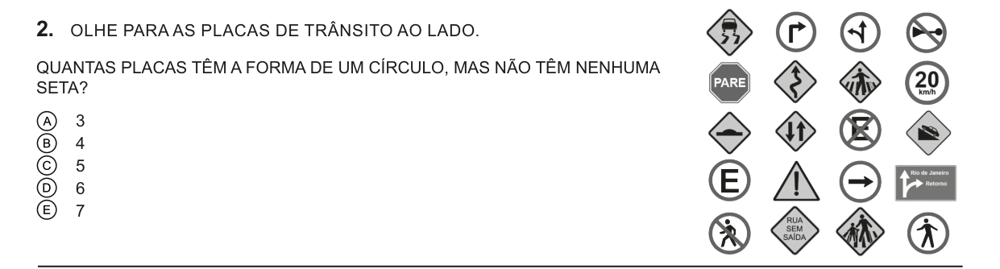
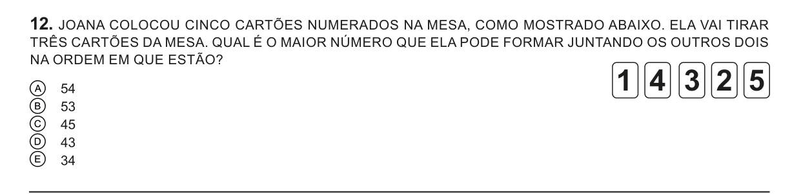
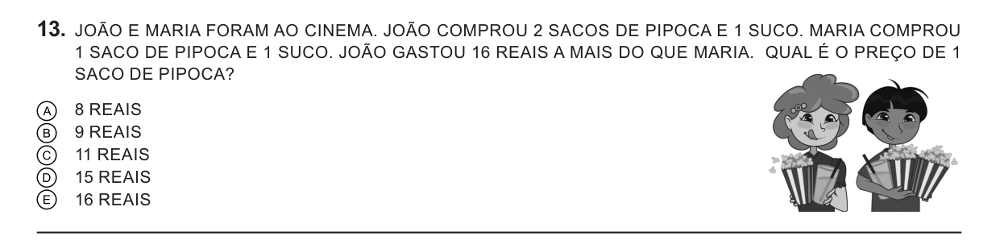
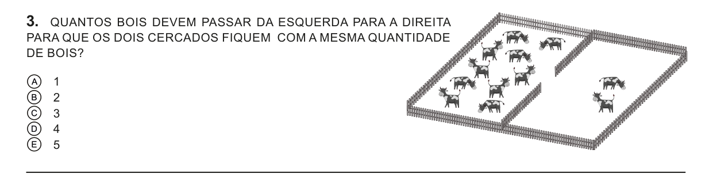
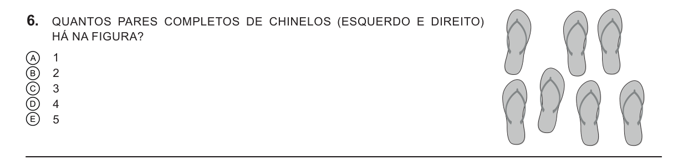
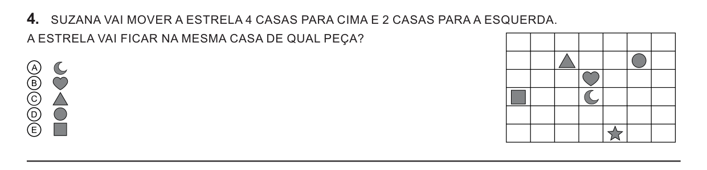
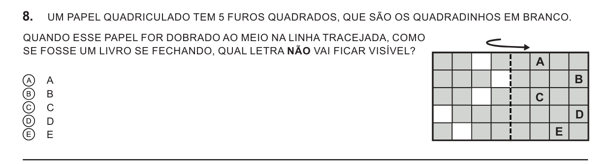
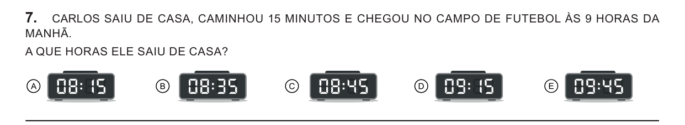
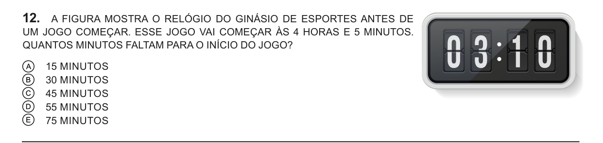

Cada dia leva de 20 a 30 minutos. A página abre sempre no dia em que você parou.
Faz os passos na ordem e marca a caixinha quando terminar cada um.
Antes de tudo, lê o card 🔍 Como ler uma pergunta aqui embaixo. Ele vale para todas as questões.
Resolve cada questão no caderno ou na folha, marca a letra e só depois abre a resposta.
Errou? Tudo bem! Abre a explicação e compara com o seu jeito. Achou muito difícil? Anota o número no caderno com uma ⭐ e mostra pro adulto.
Todo dia tem 1 rodada da ⚡ Tabuada relâmpago (5 min). A tabuada é o que mais ajuda na divisão!
Travou? Chama o adulto. Pedir ajuda também é treino.
🔍 Como ler uma pergunta Vale pra prova toda
As contas da Olimpíada são fáceis. O difícil é entender o que a pergunta quer. Estes 5 passos resolvem isso.
👉
1. Lê devagar, com o dedo embaixo da linha. A prova vem toda em LETRA MAIÚSCULA, ASSIM. Uma palavra pulada muda a pergunta.
❓
2. Acha a pergunta e passa um traço embaixo. É a frase que termina com ?. O resto é a história que te ajuda.
⭕
3. Faz uma bolinha nas palavras-armadilha. São palavrinhas que mudam tudo (a lista está logo abaixo).
✏️
4. Desenha, risca e conta na figura. Pode escrever na prova! Risca o que já contou, faz risquinhos, desenha bolinhas.
🔁
5. Antes de marcar, lê a pergunta de novo. Pensa: "a minha resposta responde isso?"
⭕ As palavras-armadilha que já caíram na prova
NÃOEXATAMENTEDIFERENTEMAIORMENORMAIS DO QUESEMUMA OU MAISDOBROLADO DE FORADIREITO / ESQUERDO
Olha o perigo: "Qual peça ela NÃO vai usar?" Quem não vê o NÃO procura a peça que serve. Aí marca a letra errada, mesmo tendo pensado certo!
🔎 Palavras-pista: tem conta de vezes ou de dividir escondida
Na Olimpíada, a conta de vezes e a de dividir não aparecem sozinhas. Elas vêm disfarçadas de historinha. Estas palavras entregam o disfarce:
✖️ CADA✖️ DOBRO✖️ VEZES✖️ FILEIRAS
➗ METADE➗ MESMA QUANTIDADE➗ IGUAL➗ REPARTIR➗ CADA UM
Sabe quantos grupos e quanto tem em cada grupo? Aí é de vezes. "8 amigos, 2 figurinhas para cada um" → 8 × 2 = 16 figurinhas.
Sabe o total e quer repartir? Aí é de dividir. "12 balas em 3 saquinhos com a mesma quantidade" → 12 ÷ 3 = 4 balas em cada.
Metade é sempre dividir por 2. Dobro é sempre vezes 2.
🕵️ Truques de detetive
Conta a história com as suas palavras. Se você consegue contar pra alguém, você entendeu.
Não sabe por onde começar? Testa as respostas. Pega a letra A e vê se ela funciona. Depois a B… Na Olimpíada, a resposta certa está sempre lá, entre as 5.
Risca as que não podem ser. Cada letra riscada deixa a questão mais fácil.
Nunca deixa em branco. Errar e deixar em branco valem o mesmo: zero. Então sempre marca uma letra.
👩🏫 Para o adulto Leitura de 3 minutos
Como ajudar a criança a interpretar sem entregar a resposta.
Abrir
Quando ela chamar, pergunte nesta ordem (e espere a resposta)
"Lê a pergunta pra mim em voz alta."
"Me conta com as suas palavras: o que a questão quer saber?"
"O que a história já te contou? Mostra na figura."
Na maioria das vezes, a criança destrava no 1º ou no 2º passo. Quando consegue recontar a questão, ela já entendeu.
O que evitar
Não leia a questão por ela depois da primeira semana. Na prova ela vai estar sozinha. Na 1ª semana, pode ler junto.
Não diga se a resposta está certa antes de ela explicar o caminho. Pergunte "como você pensou?". Muitas vezes ela acha o erro sozinha.
A conta armada (na chave) é bom saber, mas não é o que a prova cobra. Na prova, dividir é repartir em partes iguais, com números pequenos. Feijões, tampinhas e desenhos resolvem tudo, e a conta armada serve para conferir.
Material que ajuda
Papel, tesoura e lápis de cor (para dobrar e recortar). Um espelho pequeno (para as questões de espelho). 20 tampinhas ou feijões (para repartir).
Sobre a prova: 15 questões, 1h30, cada uma vale 1 ponto (o regulamento não fala em desconto por erro, então vale sempre marcar). O que mais cai: figuras e visão espacial — girar, espelhar, dobrar, ver de outro lado (~28%), organizar e contar possibilidades (~20%), continhas em historinha (~20%) e horas/calendário (todo ano).
⚡ Tabuada relâmpago 5 min por dia
10 continhas por rodada. As que você erra voltam mais vezes, até grudar na cabeça. Quando você acerta todas as continhas das tabuadas do jogo, uma tabuada nova aparece sozinha. E as que você já sabe bem começam a aparecer ao contrário, como divisão!
…
📋 Ver as tabuadas do jogo
Sem pressa: não tem relógio. Pensar um pouquinho vale mais que chutar.
Onde você parou
…
Dia 0 — Vídeos de divisão Continhas
quinta, 24/09 · ✅ já feito: vídeos + dever de casa. Se as caixinhas abaixo ainda estiverem vazias, marca as duas: assim o Reforço aparece.
Lembrete do dia 0Dividir é repartir em partes iguais (12 balas para 3 amigos → 4 pra cada) ou ver quantas vezes cabe (12 balas em saquinhos de 3 → 4 saquinhos).
Reforço — Divisão na chave e tabuada Reforço
sexta 25/09 até domingo 27/09 · ⏱ uns 25 minutos por dia · pode dividir em 2 ou 3 dias, sem pressa · 🧑 bom fazer junto com o adulto
Não lembra a tabuada? Pode olhar em "📋 Ver as tabuadas do jogo" no card da Tabuada relâmpago, ou fazer com tampinhas.
Ver respostas do Nível 29 ÷ 3 = 3 · 12 ÷ 3 = 4 · 21 ÷ 3 = 7 · 16 ÷ 4 = 4 · 24 ÷ 4 = 6 · 28 ÷ 4 = 7🥇 Desafio (só se quiser) — número grande, casa por casa
Divide primeiro o número da dezena (o da esquerda), depois o da unidade (o da direita). Ex.: 46 ÷ 2 → 4 ÷ 2 = 2 e 6 ÷ 2 = 3 → 23. Confere: 23 × 2 = 46 ✔.
⚠️ Escorregão: quem não vê o DIFERENTE procura uma conta que dá 9 e marca a letra A. É exatamente por isso que a gente faz bolinha na palavra-armadilha.
Lembrete do dia 1Antes de resolver, eu acho a pergunta e a palavra-armadilha.
Dia 2 — Caçando palavras-armadilha Leitura
sugestão: terça, 29/09 · ⏱ uns 30 minutos
Questão 1 · 1ª fase 2023

Ver resposta e explicação
🎯 A pergunta pede duas coisas ao mesmo tempo: a placa tem que ser redondaenão pode ter seta. A armadilha é o MAS NÃO.
1
Primeiro, acha só as redondas. O PARE não é redondo (tem 8 lados).
2
Das redondas, risca as que têm seta: a da seta que vira, a das duas setas (uma pra cima e outra pra esquerda) e a da seta reta.
3
Sobram 6: a da buzina riscada, a do "20 km/h", a do X, a do "E" e as duas do bonequinho andando.
✅ Resposta: letra D (6 placas)
💡 Dica: com muita coisa pra contar, risca na tela com o dedo ou faz uma lista no caderno. Assim nenhuma é contada duas vezes.
Questão 2 · 1ª fase 2025

Ver resposta e explicação
🎯 A pergunta: o maior número com 2 cartões. A armadilha é NA ORDEM EM QUE ESTÃO: não pode trocar os cartões de lugar!
1
O maior cartão é o 5. Dá pra começar com 5? Não: o 5 é o último da fila e nenhum cartão vem depois dele. Então o 5 só pode ser o segundo número, o da direita: "?5".
2
Qual o maior cartão que vem antes do 5? É o 4. Fica 45. E nenhum número pode começar com algo maior que 4, porque o 5 não pode ir na frente.
✅ Resposta: letra C (45)
⚠️ Escorregão: quem não lê "na ordem em que estão" marca 54, que é a letra A. Essa letra está lá e pega quem leu rápido.
Questão 3 · 1ª fase 2022

Ver resposta e explicação
🎯 A pergunta: quanto custa 1 pipoca. A armadilha é A MAIS. E tem uma surpresa: a questão não diz o preço do suco, e ele nem é preciso!
1
Desenha as compras: João: 🍿🍿🥤 Maria: 🍿🥤
2
Risca o que os dois compraram igual: 1 pipoca e 1 suco de cada um. Sobra só 1 pipoca a mais para o João.
3
João gastou 16 reais a mais só por causa dessa pipoca. Então 1 pipoca custa 16 reais.
✅ Resposta: letra E (16 reais)
💡 Dica: quando falta um preço, desenha as compras e risca o que é igual dos dois lados. O que sobra é a diferença.
Lembrete do dia 2Se a resposta parece fácil demais, eu leio a pergunta de novo, procurando a armadilha.
Dia 3 — Dividir é repartir igual Continhas
sugestão: quarta, 30/09 · ⏱ uns 30 minutos · 🫘 precisa de 12 tampinhas, feijões ou botões
12 tampinhas para 2 pessoas. Quantas cada uma ganha?
12 tampinhas para 3 pessoas. Quantas cada uma ganha?
12 tampinhas para 4 pessoas. Quantas cada uma ganha?
Agora ao contrário: quero montar montinhos de 3. Quantos montinhos dá pra fazer com 12?
Ver respostas1) 6 · 2) 4 · 3) 3 · 4) 4 montinhos. Conferir é fácil: junta tudo de volta e conta. Tem que dar 12 de novo!
10 balas para 2 crianças. Quantas cada uma ganha?
15 lápis em 3 estojos, todos com a mesma quantidade. Quantos lápis ficam em cada estojo?
A metade de 14. (Metade é repartir em 2!)
Ver respostas1) 5 · 2) 5 · 3) 7
1ª fase 2025

Ver resposta e explicação
🎯 A pergunta: quantos bois passam de um lado pro outro, para os dois cercados ficarem iguais.
1
Conta tudo: 10 bois na esquerda + 2 na direita = 12 bois.
2
"Ficar iguais" é repartir os 12 em 2 cercados: metade de 12 = 6 em cada.
3
Na direita tem 2, e precisa chegar a 6. Faltam 4, então passam 4 bois. (Confere: a esquerda fica com 10 − 4 = 6. ✔)
✅ Resposta: letra D (4 bois)
⚠️ Escorregão: fazer a metade de 10 = 5 e marcar a letra E, esquecendo os 2 bois que já estão na direita. Se passarem 5, a direita fica com 7 e a esquerda com 5 — não ficam iguais! Se ficar confuso, faz com 12 tampinhas.
Lembrete do dia 3Dividir é repartir em partes iguais. Às vezes sobra um pouquinho que não dá pra repartir. Metade é dividir por 2. Pra conferir, junto tudo de volta.
Dia 4 — Direita, esquerda e dobrar papel Figuras
sugestão: quinta, 01/10 · ⏱ uns 30 minutos · ✂️ precisa de 1 folha e lápis
Questão 1 · 1ª fase 2022

Ver resposta e explicação
🎯 A pergunta: quantos pares COMPLETOS. Um par completo é 1 esquerdo + 1 direito.
1
Em cada chinelo, acha o lado mais gordinho da frente (é o do dedão). Dedão à direita = esquerdo; dedão à esquerda = direito. Separa em dois grupos: 5 esquerdos e 2 direitos.
2
Cada direito ganha um esquerdo. Só tem 2 direitos, então só dá pra fazer 2 pares. Sobram 3 esquerdos sozinhos.
✅ Resposta: letra B (2 pares)
⚠️ Escorregão: contar 7 chinelos e achar que dá 3 pares (letra C). Mas dois chinelos esquerdos não formam um par! A palavra COMPLETOS avisa isso.
Questão 2 · 1ª fase 2024

Ver resposta e explicação
🎯 A pergunta: onde a estrela vai parar depois de andar.
1
Põe o dedo na estrela. Sobe 4 casas, contando só as casas novas: 1, 2, 3, 4. O dedo para na 2ª linha de cima.
2
Agora anda 2 casas para a esquerda (o lado da sua mão esquerda): 1, 2. O dedo cai no triângulo.
✅ Resposta: letra C (triângulo)
⚠️ Escorregão: contar a casa onde a estrela já está como "1". A primeira casa que conta é a do primeiro passo.
Questão 3 · 1ª fase 2024 (a mais difícil de hoje)

Ver resposta e explicação
🎯 A pergunta: qual letra NÃO vai aparecer. A letra que some é a que fica tampada pelo papel.
1
A seta mostra que o lado esquerdo (com os furos) vira por cima do lado direito (com as letras), como a capa de um livro fechando.
2
Cada furo cai no quadradinho que está na mesma distância da dobra, do outro lado. É o carimbo da experiência! Um furo encostado na dobra cai encostado na dobra do outro lado.
3
Vê cada letra. Se um furo cai em cima dela, ela aparece pelo buraco. Se não cai, o papel tampa a letra. A, C, D e E ganham um furo. A letra B não ganha nenhum: fica tampada.
✅ Resposta: letra B
💡 Dica: ficou difícil de imaginar? Desenha a grade num papel, pinta os furos, dobra na linha e olha contra a luz.
Lembrete do dia 4Na dobra, tudo cai na mesma distância da dobra, do outro lado. Na dúvida, pego um papel e faço de verdade.
Dia 5 — Horas e minutos Tempo
sugestão: sexta, 02/10 · ⏱ uns 30 minutos
1 hora tem 60 minutos. Pra somar ou tirar minutos, primeiro chega na hora cheia (a que termina em :00) e depois continua.
Exemplo: são 8:52 e passam 18 minutos. De 8:52 até 9:00 faltam 8 minutos. Ainda sobram 10 (porque 18 − 8 = 10) → 9:10.
E pra voltar no tempo: 15 minutos antes das 7:00. Volto para a hora de antes, as 6 horas. Dessa hora até as 7:00 são 60 minutos; tirando 15, sobram 60 − 15 = 45 → 6:45.
São 3:50. Que horas vão ser daqui a 20 minutos?
O filme acaba às 5:00 e durou 30 minutos. Que horas começou?
De 10:40 até 11:00, quantos minutos são?
De 10:40 até 11:15, quantos minutos são?
Ver respostas1) 4:10 (10 min até 4:00 + mais 10) · 2) 4:30 · 3) 20 minutos · 4) 35 minutos (20 até 11:00 + 15)
Questão 1 · 1ª fase 2024

Ver resposta e explicação
🎯 A pergunta: a que horas ele SAIU. Ele chegou às 9:00, então saiu antes: é pra voltar no tempo.
1
15 minutos antes das 9:00. A hora volta de 9 para 8. Das 8:00 às 9:00 são 60 minutos; tirando 15, sobram 60 − 15 = 45 → 8:45.
✅ Resposta: letra C (08:45)
⚠️ Escorregão: somar em vez de tirar e marcar 09:15, que é a letra D. Ele não pode ter saído de casa depois de chegar no campo!
Questão 2 · 1ª fase 2023

Ver resposta e explicação
🎯 A pergunta: quantos minutos faltam, de 3:10 até 4:05.
1
De 3:10 até a hora cheia 4:00: 60 − 10 = 50 minutos.
2
De 4:00 até 4:05: mais 5 minutos.
3
50 + 5 = 55 minutos.
✅ Resposta: letra D (55 minutos)
⚠️ Escorregão: achar que passou 1 hora inteira ou mais (60 ou 75 minutos). De 3:10 até 4:10 seria 1 hora, mas o jogo começa às 4:05, 5 minutos antes disso. Sempre para na hora cheia!
Lembrete do dia 51 hora = 60 minutos. Pra somar ou tirar minutos, primeiro paro na hora cheia.